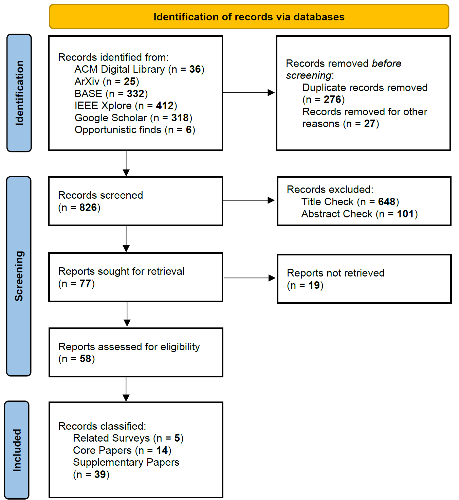
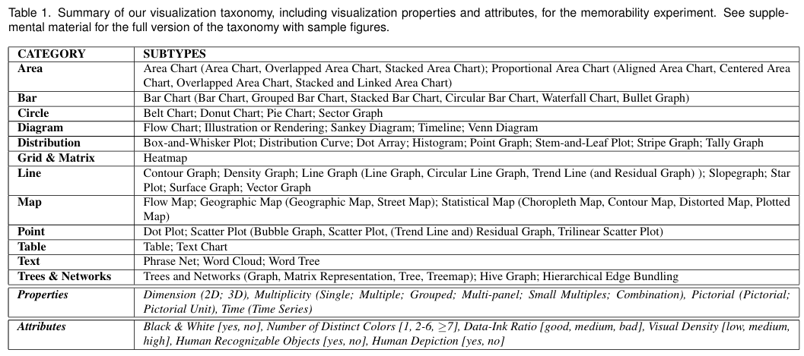

Content
- Introduction
- Contribution & Methodology
- Principles of Statistical Graphics
- Definition of Benchmark Dimensions
- Benchmark Characterization Matrix
- Gap Analysis
- Direction for Future Benchmarks
- Limitations
- References
- Appendix
Supervisors: Prof. Dr. Frauke Kreuter, Dr. Cynthia Huang
2026-07-24
("NL2VIS" OR "text-to-vis*" OR "text-to-chart" OR "natural language to vis*" OR "data vis*")
AND ("large language model*" OR "LLM*" OR "multimodal LLM*" OR "MLLM*")
AND ("benchmark*" OR "dataset*" OR "evaluation framework*" OR "evaluat*")
Success of a data visualization depends on following certain graphical principles:
Core dimensions:
Analytical Tasks: An extended taxonomy, building upon the Amar and Stasko low-level task taxonomy, encompassing the analytical operations performed in the process of constructing a visualization:
Chart Types: The chart taxonomy of Borkin was taken as a base and extended to capture and consider all the benchmarks
Evaluation Checkpoints:
Visual Intent in Natural Language Queries:
Ground Truth: The reference point of evaluation
Dataset
Legality Checks
Query-chart compliance
Validity Checks
Successful execution of code in a sandboxed environment
Readability Checks
Clear presentation of information
Content:
Extended Amar and Stasko Low Level Analytical Task Taxonomy
Characterize Distribution: Given a set of data observations and a quantitative attribute of interest, characterize the distribution of that attribute’s values over the set
Cluster: Given a set of data observations, find clusters of similar attribute values
Compute Derived Value: Given a set of data observations, compute an aggregate numeric representation of those data observations
Correlate: Given a set of data observations and two attributes, determine useful relationships between the values of those attributes
Determine Range: Given a set of data observations and an attribute of interest, find the span of values within the set
Filter: Given some concrete conditions on attribute values, find observations satisfying those conditions
Find Anomalies: Identify any anomalies within a given set of data observations with respect to a given relationship or expectation, e.g. statistical outliers
Find Extremum: Find observations possessing an extreme value of an attribute over its range within the data set
Retrieve Value: Given a set of specific observations in the dataset, find attributes of those observations
Sort: Given a set of data observations, rank them according to some ordinal metric
(+) Analyse Trend: Given a set of data observations ordered along a temporal attribute, characterize the patterns of changes, exhibited by these observations
(+) Compare: Given two or more sets of observations, determine how they differ with respect to an attribute or a derived value
(+) Forecast: Given historical observations of an attribute ordered over time, extrapolate or predict its values beyond the range of observed data
Borkin Visualization Taxonomy

Examples taken from NLVCorpus
High Ambiguity: The prompt specifies only the analytical task, leaving the chart type and other specifications unspecified
Medium Ambiguity: The prompt specifies the analytical task and chart type, while leaving visualization details(e.g. encodings, layout, styling) unspecified
Low Ambiguity: The prompt specifies the analytical task, chart type and most visualization specifications
Data Selection Stage: Verifies that the observations required for the analysis have been correctly identified and extracted from the dataset(s)
Data Transformation Stage: Verifies that the data has been appropriately wrangled and prepared for visualization
Visualization Generation Stage: Verifies that the visualization was successfully produced, either through execution of the rendering code or through the LLM’s successful generation of the visualization
Reading Stage: Verifies that the resulting visualization aligns with the established evaluation criteria and ground truth
InfoVis: Ideally should be attractive, grab one’s attention, tell a story, and encourage the viewer to think about a particular dataset, both as individual measurements and as a representation of larger patterns
Statistical Graphics: Focused not on visual appeal but on facilitating an understanding of patterns in an applied problem, both in directing readers to specific information and allowing the readers to see for themselves
Scientific Graphs: Scientific visualization: traditionally refers to visualizing data that is scientific in application, physically based, and has a given spatialization (i.e., the data’s spatial arrangement is inherent, like 3D medical images or wind tunnel vector data)